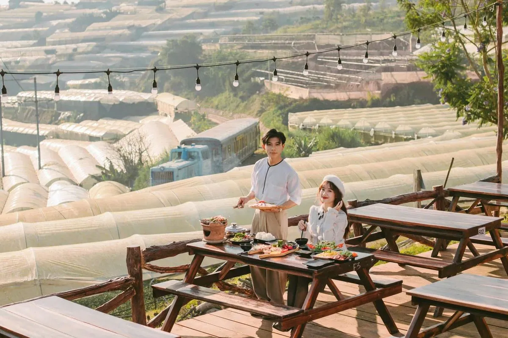
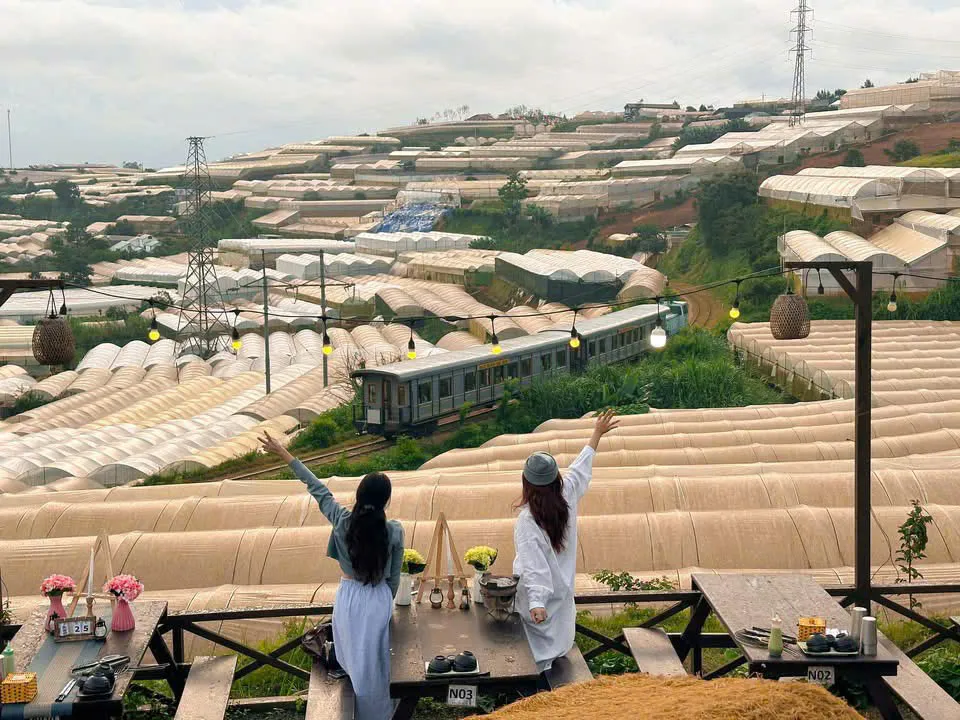
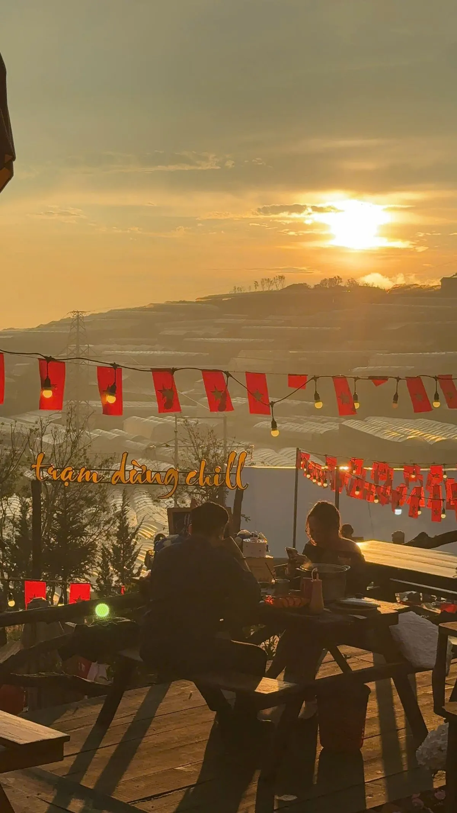

1. Trạm Dừng Chill — View hoàng hôn + thung lũng nhà lồng
Nằm trên đường Huỳnh Tấn Phát, Trạm Dừng Chill sở hữu view hoàng hôn Đà Lạt đẹp bậc nhất với góc nhìn 180 độ ra thung lũng. Buổi chiều, mặt trời lặn dần sau những rặng thông, ánh nắng vàng phủ lên hàng ngàn nhà lồng — khung cảnh như tranh vẽ. Bạn vừa thưởng thức BBQ nướng thơm phức vừa ngắm hoàng hôn rực rỡ — trải nghiệm khó quên.
👉 Đặt bàn ngay để có vị trí view hoàng hôn đẹp nhất!

2. Đồi Robin — Toàn cảnh thành phố lúc chiều tà
Đồi Robin nằm ở trung tâm Đà Lạt, cao hơn mực thành phố nên có góc nhìn toàn cảnh. Lúc hoàng hôn, bạn có thể thấy toàn bộ thành phố chuyển màu từ vàng cam sang tím đỏ. Tuy nhiên, đây chỉ là điểm ngắm — không có quán ăn phục vụ tại chỗ.

3. Hồ Xuân Hương — Sunset phản chiếu mặt nước
Hồ Xuân Hương nằm giữa lòng Đà Lạt, mặt nước phẳng lặng phản chiếu ánh hoàng hôn tạo nên bức tranh tuyệt đẹp. Đi dạo quanh hồ lúc 17:00-18:00 là thời điểm lý tưởng nhất. Nhiều quán cafe ven hồ có view đẹp để ngồi thưởng thức.

4. Langbiang — Hoàng hôn trên đỉnh núi
Nếu bạn thích phiêu lưu, hãy leo lên đỉnh Langbiang để ngắm hoàng hôn. Ở độ cao hơn 2.100m, view sunset Langbiang bao quát toàn bộ cao nguyên Lâm Viên. Cần xuất phát trước 15:00 để kịp lên đỉnh trước khi mặt trời lặn.
5. Đồi Thiên Phúc Đức — View thung lũng rộng
Nằm ở ngoại ô, đồi Thiên Phúc Đức ít người biết nhưng có view thung lũng cực đẹp lúc chiều tà. Không gian yên tĩnh, thích hợp cho ai muốn tránh đám đông.
Kết luận — Ngắm hoàng hôn Đà Lạt ở đâu đẹp nhất?
Nếu bạn muốn vừa ngắm hoàng hôn Đà Lạt vừa thưởng thức ẩm thực, Trạm Dừng Chill là lựa chọn hoàn hảo — view đẹp, đồ ăn ngon, không gian chill. Đặt bàn ngay để trải nghiệm!